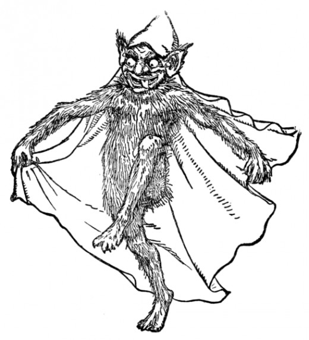

A Piece from a Tour
In the summer of 2016, my friend Sebastian and I went on tour around the US, mostly the Southern and Northeastern states. We performed in houses, bars, theaters, and art galleries from New Orleans to Chicago to New York City. I flew down to New Orleans from Chicago so all I brought was my laptop. I used the software MaxMSP to process recorded and synthesized sounds, while Sebastian's project mostly consisted of tape loops and droning distorted guitar.
It was a good Summer.